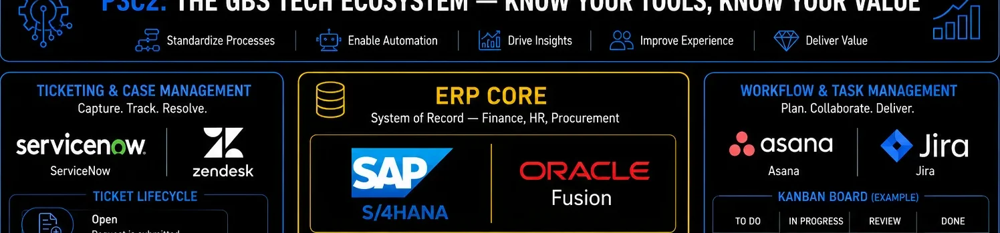
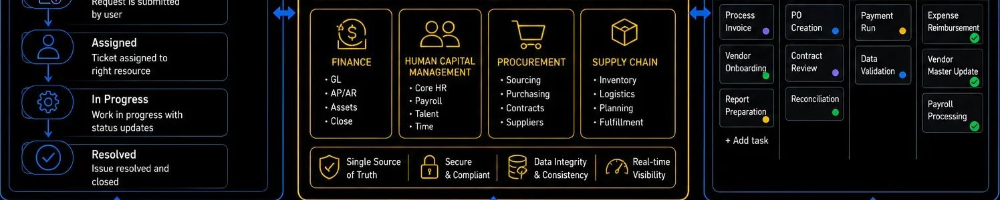

Pillar 3 · Cluster 2
The enterprise stack that runs GBS operations
ERP systems, ticketing platforms, and workflow tools are the operational backbone of every GBS center. Understanding what they do, why they matter, and where they break is non-negotiable knowledge for any GBS professional.
Enterprise Resource Planning
Why ERP is the backbone, not the brain
The value of an ERP is integration across functions, not the features of any single module. That distinction changes how you think about every process you touch.
Every transaction in a GBS center eventually touches an ERP. Purchase orders, invoices, journal entries, payroll runs, intercompany settlements — they all flow through SAP, Oracle, or Microsoft Dynamics as the system of record. The ERP is not where intelligence lives. It is where data lands, gets validated, and becomes the official version of what happened.
The real power of an ERP is not any individual module. It is the integration layer — the fact that a purchase order in procurement automatically creates a commitment in finance, triggers a goods receipt in logistics, and updates the cost center budget in real time. When that integration breaks, you get manual reconciliations, duplicate entries, and audit findings. Most GBS process failures trace back to broken ERP integration, not missing features.
- Finance (FI/CO) — general ledger, accounts payable and receivable, cost center accounting, asset management, and intercompany eliminations
- Procurement (MM/Purchasing) — purchase requisitions, purchase orders, goods receipt, invoice verification, and vendor master management
- Human Capital Management (HCM) — payroll processing, time management, organizational management, and benefits administration
- Sales and Distribution (SD) — order-to-cash, billing, credit management, and revenue recognition
- Controlling (CO) — internal cost allocation, profit center accounting, product costing, and activity-based costing
- When someone says "we need a new ERP feature," the first question is always: does the current system already do this, and is the configuration just wrong?
- Most GBS teams use less than 40% of their ERP's functionality — the gap is training and process design, not software capability
- The strongest GBS analysts understand the data model behind the screens, not just which buttons to click

ERP layer — SAP, Oracle, and the GBS backbone

The GBS tech ecosystem: ERP core, ticketing, workflow management, and integration layer
SAP and Oracle
SAP S/4HANA and Oracle Fusion — what GBS needs to know
You do not need to be an ERP consultant. But you need to understand why your leadership cares about the migration timeline and what changes for your daily work.
SAP S/4HANA is the successor to SAP ECC (ERP Central Component), built on an in-memory database (HANA) that eliminates the need for aggregate tables and enables real-time reporting. The migration deadline from SAP ECC has been a major driver of enterprise transformation programs globally. For GBS teams, the shift means faster reporting, simplified data models, and new capabilities like embedded analytics — but also significant process re-engineering and retraining.
Oracle Fusion Cloud ERP takes a cloud-native approach, offering finance, procurement, and project management as SaaS modules. For GBS operations, Oracle's strength is its unified data model across HR (Oracle HCM Cloud) and finance, which reduces reconciliation effort in shared services centers that handle both domains. The trade-off is less customization flexibility compared to on-premise Oracle E-Business Suite.
Strengths for GBS
- Deep process coverage — hundreds of pre-built business scenarios
- Dominant in European and manufacturing enterprises
- Massive partner environment for implementation and support
- Real-time embedded analytics eliminate batch reporting delays
Strengths for GBS
- Cloud-native architecture — no on-premise infrastructure burden
- Unified data model across finance and HCM reduces reconciliation
- Quarterly feature updates delivered automatically
- Stronger out-of-box AI and machine learning for anomaly detection
ERP migrations in GBS are rarely about technology. They are about change management, data cleansing, and process standardization. The system goes live in months; the organization takes years to catch up. Every GBS professional should understand that an ERP migration will change their daily work — screen flows, approval hierarchies, reporting logic, and exception handling all shift. Prepare for the disruption, not just the training.
Service Management Platforms
Ticketing and case management — ServiceNow and Zendesk
If ERP is where transactions live, the ticketing system is where service requests, incidents, and escalations are tracked. In GBS, this is how you prove you delivered.
ServiceNow dominates enterprise IT service management (ITSM) and is increasingly used for HR service delivery, finance shared services, and cross-functional workflow automation. Its strength is the platform model — a single system for incident management, request fulfillment, knowledge management, and service-level tracking across multiple GBS functions. For large GBS organizations, ServiceNow often becomes the operational command center.
Zendesk occupies a different space — lighter, faster to deploy, and oriented toward external customer support or smaller-scale internal help desks. In GBS, Zendesk is more common in organizations with simpler service catalogs or those using it as a bridge while evaluating enterprise-grade platforms. The trade-off is less depth in workflow automation and integration with ERP systems.
- SLA tracking with automated escalation — every request needs a clock and an owner
- Service catalog structure — users should select from a defined menu, not write free-text requests
- Knowledge base integration — common issues should route to self-service before creating a ticket
- Reporting and dashboards — ticket volume, resolution time, SLA compliance, and backlog aging
- Integration with ERP — ticket closure should trigger or validate downstream system actions
- Tickets created but never categorized — makes reporting meaningless and hides demand patterns
- SLAs defined but not enforced — the clock runs but nobody acts on breaches
- Knowledge base exists but is never updated — agents re-solve the same issues manually
- No feedback loop — ticket data never flows back into process improvement
Workflow and Task Management
Jira, Asana, and the project layer
Not everything belongs in the ERP or the ticketing system. Projects, initiatives, and cross-functional work need their own coordination layer.
Jira started as a software development tool but has expanded into business project management, particularly for GBS transformation programs, automation initiatives, and continuous improvement projects. Its strength is structured workflows — every task moves through defined statuses with clear ownership, and the board view makes bottlenecks visible. For GBS teams running lean or agile improvement programs, Jira provides the discipline that spreadsheet trackers cannot.
Asana is positioned as a more accessible alternative — easier to learn, less technical, and better suited for teams that need project coordination without the overhead of sprint planning and developer-oriented workflows. In GBS, Asana works well for managing recurring deliverables (close calendars, audit timelines, onboarding checklists) where the workflow is simpler but consistency matters.
- Recurring operational tasks with SLA tracking — use the ticketing system (ServiceNow, Zendesk)
- Transactional processing (invoices, payments, journal entries) — use the ERP directly
- Transformation projects with sprints and dependencies — use Jira with board and backlog views
- Cross-functional coordination and task tracking — use Asana or Microsoft Planner for simplicity
- Ad-hoc requests that need routing and approval — use the ticketing system with a defined catalog
- The tool is never the problem. The problem is that nobody defined the workflow before choosing the tool.
- GBS teams that run projects in the same system as operations (e.g., tracking a process redesign in the ticketing queue) always lose visibility — keep project work separate from BAU.
- If your team uses more than three coordination tools, you have a governance problem, not a tool gap.

Integration layer — connecting the enterprise stack
Reference
Glossary
Full glossary at the GBS Insider Club Field Guide.
- Mordor Intelligence — ERP Software Market Size and Share Analysis, 2026 forecast
- 6sense Technology Insights — SAP S/4HANA market adoption data, 2026
- Straits Research — SAP S/4HANA Application Market Size report, 2025
- Gartner — Magic Quadrant for Cloud ERP for Service-Centric Enterprises, 2025
- ServiceNow — Enterprise Service Management platform documentation
- Atlassian — Jira Work Management product documentation